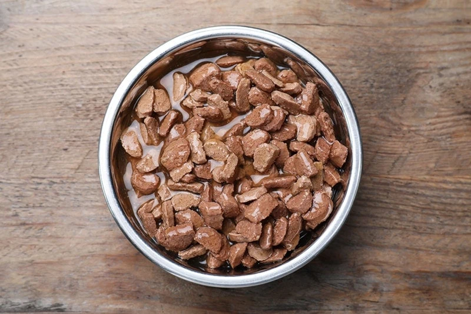

Wet Food

One of life's greatest pleasures (second only to humping my brother)!
There's truly nothing better than the sound of a freshly opened can of wet food. It comes in different
varieties such as pate, chunk, and gravy. Irritatingly, wet food is not served nearly as often as kibble.
Making this dish takes 2-5 minutes depending on medication additions and the availability of a clean spoon.
Here's what you need:
- Wet Food, 1 can
- Bowl, any size
- Medications (as needed)
Here's what you do:
- If applicable, wake up your human (see steps 1-5 of the kibble recipe for wake up instructions).
- Stand on the table and stare unblinkingly into your humans eyes.
- Meow at a volume that is at least twice your typical intensity so it is clear you are requesting wet food and not kibble.
If your human only provides kibble at this stage, continue staring and meowing until they realize their mistake.
- Once your human opens the can, increase meow intensity to maximum to provide affirmation that they have made the right choice.
- Your human may take the wet food into the kitchen to incorporate any necessary medications at this point. You will need to continue vocalizing
throughout the incorporation process to ensure they do not forget to give you the food.
- Start eating as quickly as possible as soon as they begin to spoon out the food. DO NOT WAIT UNTIL THEY HAVE FULLY DISTRIBUTED THE FOOD!
- Assuming you followed step 6 closely, you should finish your wet food faster than your siblings and you can begin eating from their bowls.
- Once satiated, walk to another room to bathe yourself, but don't forget to return to the bowls in 5-10 minutes to finish off any residuals.
- When you are certain the bowls are clean, grab a couple bites of kibble regardless of whether or not you have any remaining stomach capacity.
*Note* As there is no recognizable pattern for when humans will disperse wet food, you should follow these steps every time you find
yourself in the kitchen at the same time as them (especially if you hear them open the utensil drawer).
Back to Recipes